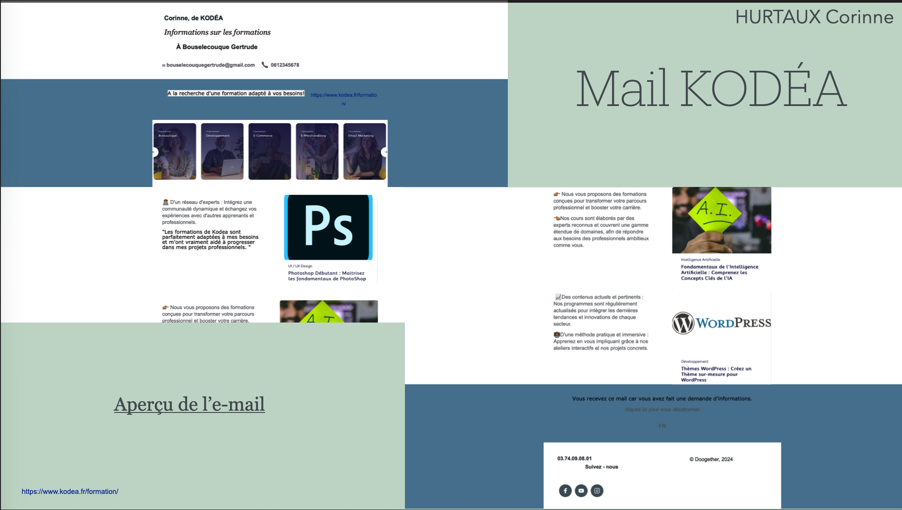
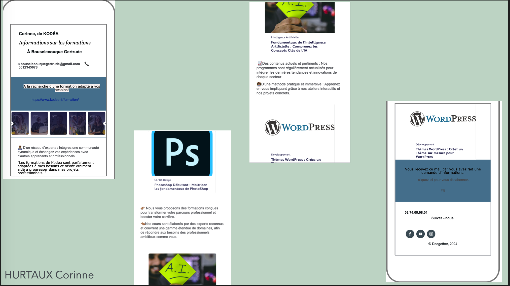

KODEA — Emailing
Apprentissage et création d'une campagne d'e-mailing professionnelle
📋 Contexte du projet
Dans le cadre de ma formation BTS SIO SLAM, j'ai réalisé un projet d'emailing professionnel avec KODEA. L'objectif était d'apprendre à concevoir et mettre en œuvre une campagne d'e-mailing complète : de la conception graphique du template jusqu'à son intégration et son envoi.
Ce projet m'a permis de découvrir les enjeux du marketing digital par e-mail : comment capter l'attention des destinataires, structurer un message efficace, et utiliser les bons outils pour créer des communications visuellement attractives.
🎯 Mission et réalisations
- Conception graphique du template d'e-mail avec Adobe Photoshop
- Intégration du design dans WordPress pour l'envoi
- Rédaction du contenu et structuration du message
- Personnalisation des éléments visuels (images, couleurs, typographie)
- Test et validation du rendu sur différents clients mail
💡 Compétences développées
Développer la présence en ligne de l'organisation
J'ai conçu une communication digitale soignée et professionnelle au nom de KODEA. Ce template d'e-mail permet à l'organisation de toucher sa cible efficacement et de renforcer son image de marque en ligne.
Répondre aux incidents et demandes d'assistance
J'ai dû adapter le template pour garantir son bon affichage sur différents clients de messagerie (Outlook, Gmail, mobile), en résolvant les problèmes de compatibilité rencontrés lors des tests.
🛠️ Outils utilisés
Conception graphique
Intégration & Envoi
⚠️ Difficultés rencontrées
Compatibilité des clients mail
Problème : Les templates HTML pour e-mail ont des contraintes très spécifiques — certaines propriétés CSS ne sont pas supportées par Outlook ou les webmails, ce qui causait des problèmes d'affichage.
Solution : J'ai appris à utiliser des tableaux HTML et des styles inline pour assurer la compatibilité maximale, et j'ai testé le rendu sur plusieurs clients de messagerie avant l'envoi final.
✅ Résultats et bilan
Ce projet m'a permis de découvrir un domaine que je ne connaissais pas : la création d'e-mails professionnels. J'ai appris à utiliser Photoshop pour la conception graphique et à intégrer des templates dans WordPress.
Au-delà des aspects techniques, ce projet m'a sensibilisée aux enjeux du marketing digital : l'importance de la clarté du message, de l'attrait visuel et de l'adaptation au support de réception.
📸 Aperçu du projet

